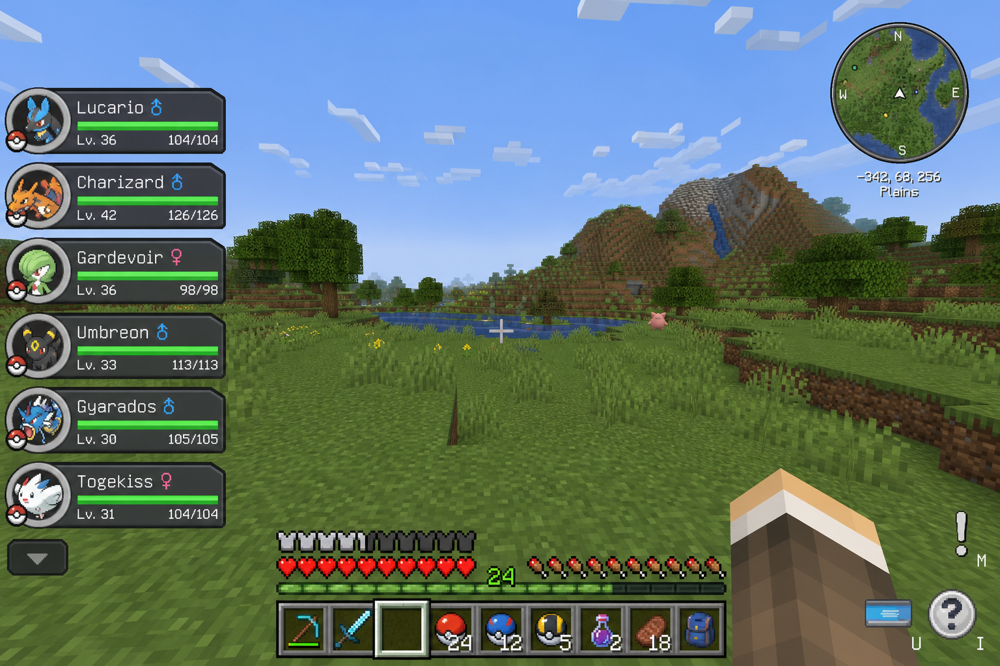

Eerste uren
Openingsgids: claim, eerste vangsten, Brock — en daarna de volgende loop naar Misty, zodat je weet wat je na badge één doet.
Inhoud
{kind=link}

Eerste-uur checklist
- Druk C → kies starter. Gras is het veiligst tegen Brock.
- Plaats een bed en slaap één keer (respawn).
- Claim nu met FTB Chunks — druk U (Claim Manager) of M (kaart) — bed, chests, farm, waystone. Unclaimed = publieke loot.
- Activeer eventuele spawn-waystone (rechtermuisklik). Lees kort het guideboek in je hotbar.
- Vang 2–3 Pokémon in de buurt; houd balls en heals op je hotbar.
- Craft de Brock-map: plaats Kanto Cartography Table → doe Empty Map + Brock Map Key erin (open de Empty Map niet in de wereld) → volg de map. Fight-gids: Brock.
- De level cap blijft aan tot de volgende gym — bewust op PokeHaven EU.
- Vast? Screenshot + Discord
#help, of blijf lezen op deze wiki.
Controls die je constant gebruikt
| Actie | Toets | Waarom |
|---|---|---|
| Party / starter | C | Starter kiezen en team beheren |
| Selecteer send-out | ↑ ↓ | Voorkomt verkeerde Pokémon |
| Gooi / recall | R | Geselecteerde Pokémon uitsturen |
| Start battle | G | Fight or Flight — gevecht starten |
| Questboek | O | FTB Quests — First Steps |
| Claim Manager | U | FTB Chunks claimen — Claims |
| Chunk-map | M | FTB Chunks-kaart |
| Chat | T | Text chat |
| Voice chat | V | Menu — mute K, groep B |
| Dismount | X | Van mount afstappen |
| Ride | Shift + rechtermuisklik | Zie Rijden |
| PC | /pc | Opslag |
Belangrijk
Bulbasaur naar slot 1 slepen is niet genoeg als een andere Pokémon nog geselecteerd is. Highlight eerst met de pijltjes, dan R.

Klaar met uur één?
- Ja: starter + 2–3 catches, eten, bed, claim, stenen tools, map op hotbar, paar crafted balls.
- Nog niet: mega-base, Nether-loot runs, legendary hunts, luxury shopping.
Wat nu na Brock?
- Win Brock → badge → je level cap gaat omhoog (check Trainer Card).
- Healen / restocken in je base. Claim bijhouden.
- Craft Misty’s map: REI → Cerulean Star (seagrass met Shears) + verse Empty Map in de Kanto Cartography Table. Open de Empty Map niet eerst in de wereld.
- Neem Electric/Grass mee vs Water. Cap terwijl Misty next is: ongeveer low–mid 30s — zie Level cap.
- Volg de map, activeer waystones onderweg, versla Misty → daarna Lt. Surge.
Volledige fights: Brock · Misty · maps: Gym-maps.
Volgende: Brock · Misty · Gym-maps · 30-dagen roadmap